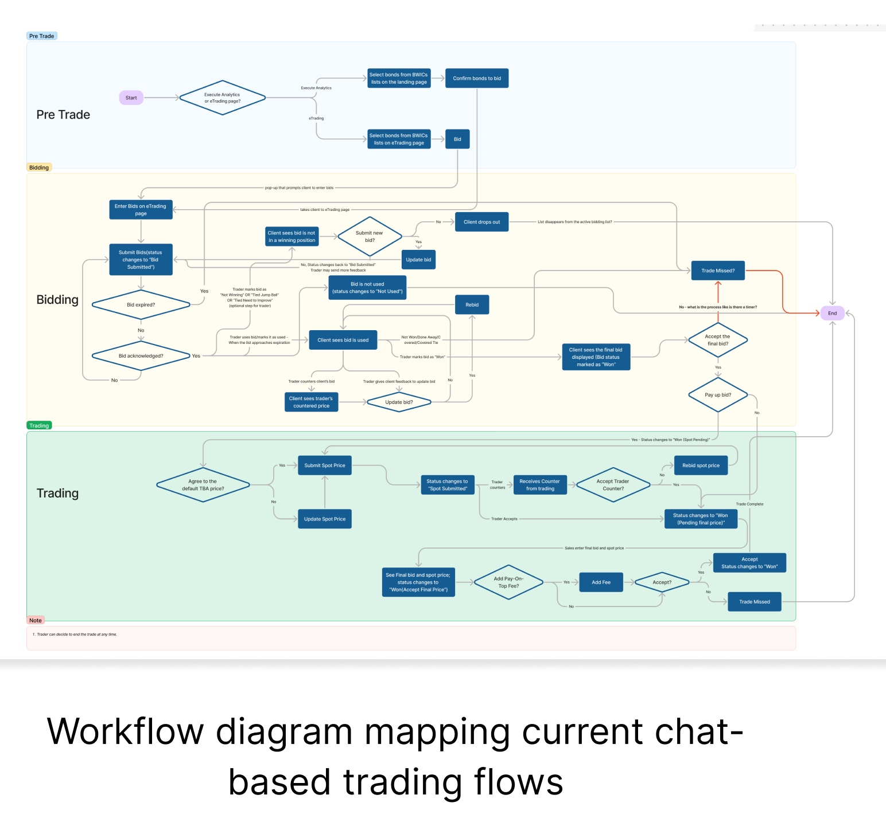
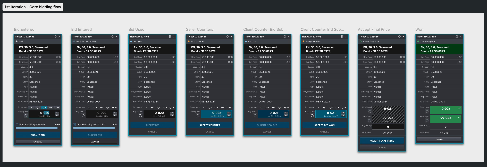
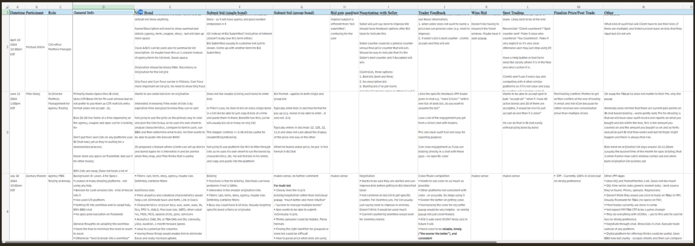
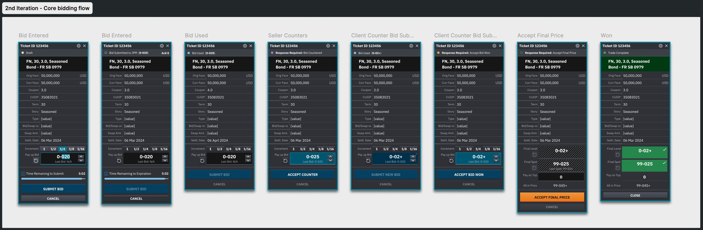
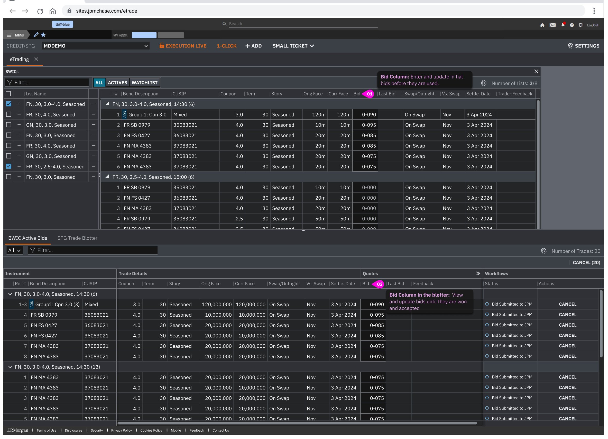
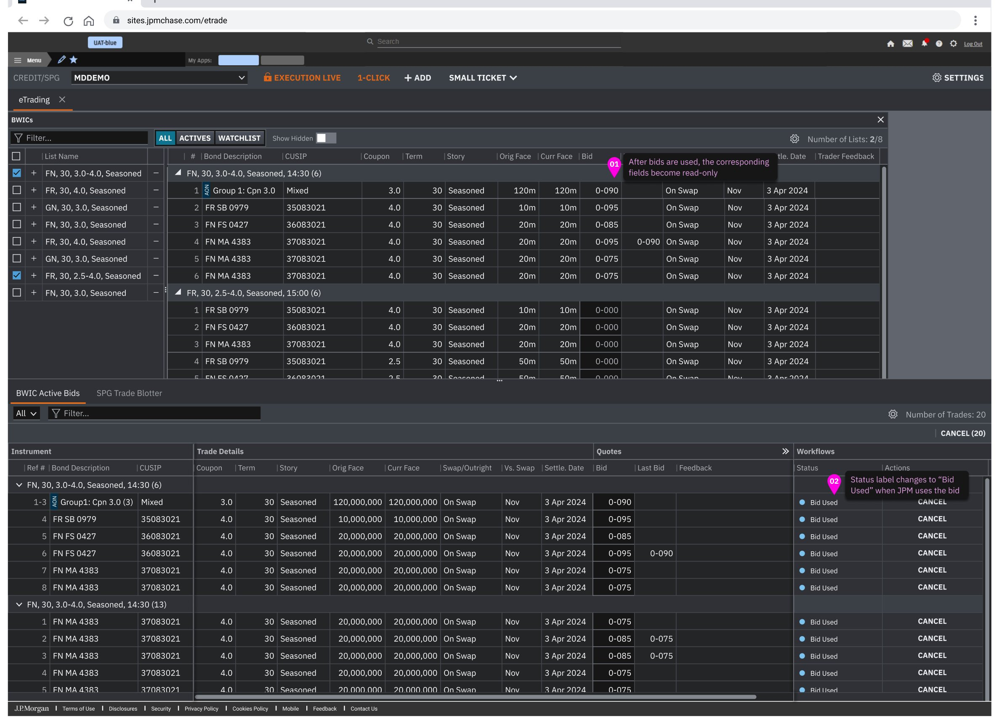
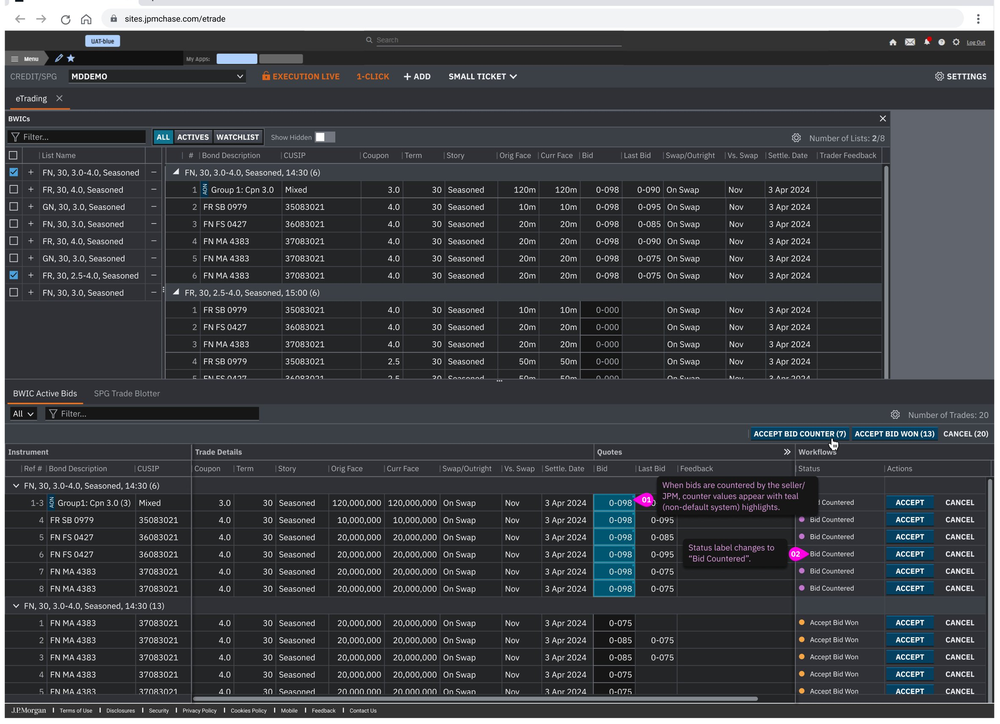
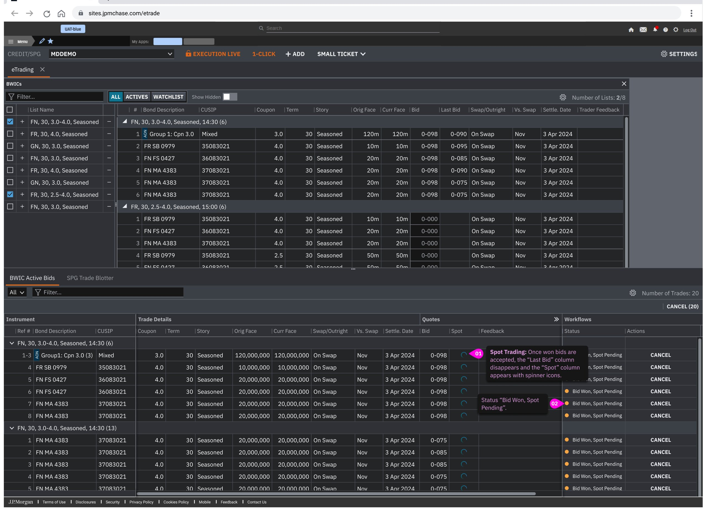
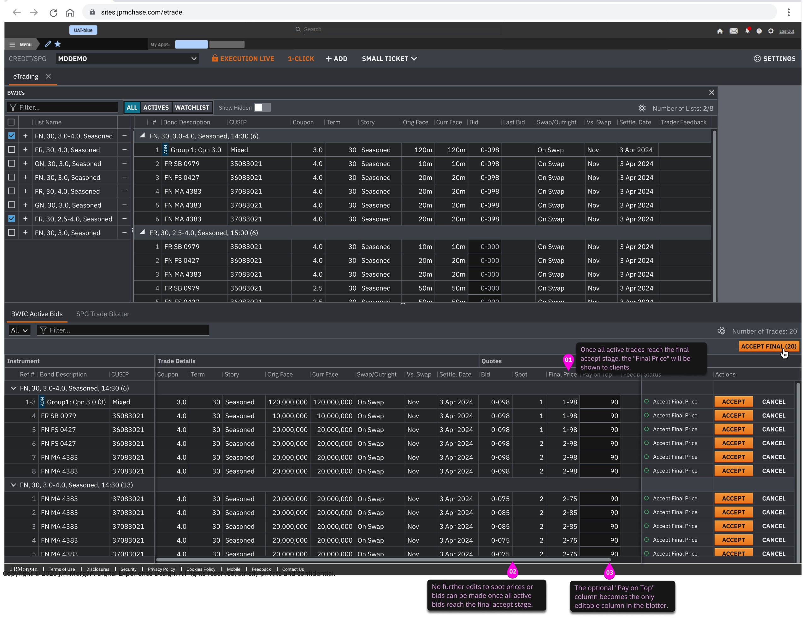
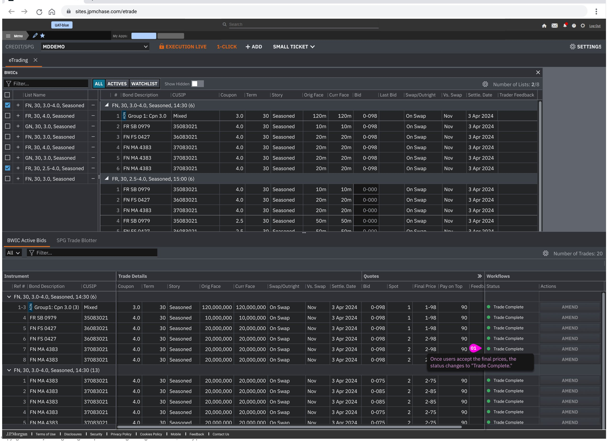

Background
The platform, the team, the opportunity
Execute is JPMorgan's single-dealer platform for institutional macro trading. I'm part of a three-person design team.
This project was my focus for about a year: building the first client-facing electronic trading tool for securitized products on Execute. This category had never been digitized at this scale.
Discovery
Starting with more questions than answers
The business goal was broadly understood: electronify the manual, high-stakes workflows in the securitized product group (SPG). But almost nothing was defined when I joined.
I started with stakeholder interviews across traders, salespeople, and internal partners to map the current landscape before touching any design tools.
Scope
Narrowing in on the right problem
SPG trades through two main mechanisms: TBA (To Be Announced) and BWIC (Bid Wanted in Competition). TBA is standardized and already supported by platforms like Tradeweb. BWIC is different: an auction-based process with fragmented communication and no clean digital solution on the market.
JPMorgan also issues its own BWIC lists, which meant digitizing this flow could directly increase list visibility and drive more client engagement on Execute.
We prioritized BWIC for MVP. Not because it was easier, but because the opportunity was bigger and the gap in the market was real.
Research
Understanding the real workflow
Initial client interviews showed where friction was highest: fragmented tools, no bid tracking, and no centralized view. But one finding stood out. Clients described uncertainty even after winning a bid. Prices shifted. Trades fell through. The interviews told me what was happening but not why.
Trader interviews hit a wall. Years of habit had become muscle memory. So I shifted to the engineering team who built internal tools for SPG traders. They had mapped the workflow systematically. As they demoed how traders move through their day, I drew the flow diagram live alongside them.

What emerged explained everything:
After an initial winning bid, there's often a second round of negotiation to confirm the final price. The seller may counter, the client may counter back, and the spot price may go through multiple rounds before both sides agree. Each of these steps creates a new status that the client needs to understand and act on. The volume of back-and-forth makes it difficult to know where you stand at any given moment.
User Journey
The buy-side client experience
Combining client interviews with engineering research, I mapped the full buy-side journey across five stages. The later stages reflect the hidden complexity the initial interviews couldn't surface.
Three problems to solve
Centralize the entire BWIC workflow into a single view where clients can browse, bid, track, and confirm without switching tools?
Make every status and required action immediately clear, with an unambiguous signal when a decision is final?
Define
Redefining the BWIC flow
We redefined the BWIC workflow into four distinct stages, moving away from informal, overlapping phases toward a structure that could be designed against.
Design · Iteration 1
Building the core workflow
The first iteration focused on replacing the phone-and-chat process with a structured electronic experience: a centralized place to browse bonds, submit bids, and track status.
Layout exploration
The core layout question: how to present bid management without sacrificing the ability to browse new bond lists at the same time.
Toggle between "All Lists" and "Active Bids" in a single panel.
Persistent blotter below keeps active bids always visible while the top panel is free for browsing.
Browsing available bonds and monitoring active bids aren't sequential tasks. They happen at the same time. Option A forced users to choose one context or the other. Option B keeps both visible.
Iteration 1 focused on the core bidding flow only. The spot price negotiation phase was deliberately scoped out to validate the electronic bidding experience on its own first.
Ticket flow
The bid ticket guided clients through the full bidding lifecycle: entering a bid, submitting, countering, accepting, and reaching a final outcome.

Design Review
Testing with real users
I ran design reviews with three participants: a CIO/Portfolio Manager, a Director of Specs Trading, and an Agency MBS Trader.

Three themes came through:
Participants bid on 20 to 30 bonds at a time, often pasting from spreadsheets. Single-bond submission wasn't how they worked.
The confusion wasn't about label names. It was about irreversibility. Users didn't know which action was the point of no return and from where no more changes could be made.
Clients trade across Bloomberg, IB Chat, Tradeweb, and more. They're not watching Execute all day. If a new BWIC list drops and they miss it, the opportunity is gone.
Design · Iteration 2
Responding to real user needs
The design review reshaped the product. Iteration 2 addressed three things: revising the status labels and visual system, adding the spot price negotiation flow, and building bulk bid management.
Status label revisions
Users couldn't distinguish time-sensitive states from passive ones. Iteration 2 introduced a systematic language revision and a consistent color + shape treatment.
Revised labels

Full ticket flow with spot price negotiation
Iteration 2 also introduced the spot price negotiation phase that was scoped out of iteration 1. The full flow now covers bidding, countering, spot pricing, and final confirmation.

Bulk trading flow
The design review confirmed that clients bid on 20 to 30 bonds at a time. Iteration 2 introduced bulk bid management directly in the split-view blotter.






Outcomes
Impact
Within the first half-year of launch, the product generated $2.4B in trading volume with $1.3B executed. 37 monthly active users and 45 demos in H1 showed healthy adoption for a zero-to-one product in a space with no prior electronic trading tool.
Reflection
This was a fun, challenging project. As the sole designer and researcher, I wore both hats simultaneously, adapting to shifting deadlines and navigating stakeholder dynamics while advocating for the research needed to make informed decisions.
I'm glad I insisted on the research sessions, even when they were scrappy. The trader interviews that hit a wall. The pivot to the engineering team. Drawing the workflow diagram live during demos. None of it followed a textbook process, but it produced the insights that shaped the entire product.
The design review wasn't a formal usability study. It was three conversations with people who would actually use the product, conducted under real time constraints. What came out of it reshaped our priorities: bulk bidding became the focus of iteration 2, and the remaining two findings, around action irreversibility and platform attention, informed the status label revisions and identified opportunities we're still working toward.
What I'd do differently
Push harder on trade cancellation. There's currently no structured way for clients to back out once they've committed. Key stakeholders were resistant to including this due to conflict of interest on the business side. But a platform that lets you commit irrevocably without offering a way to reverse course feels one-sided. This is a hard conversation I'd revisit in a future iteration.
Explore alerts more deeply. Execute is a single-dealer platform. Clients trade competitively across multiple systems, and the busiest window for specs trading is 10 to 11:30am. If a new BWIC list drops and the client misses it, the opportunity is gone. We identified the need for alerts during the design review, but I'd want to explore the notification model further: what triggers an alert, which channel it uses, and how to avoid fatigue in an environment where traders are already overwhelmed with information.